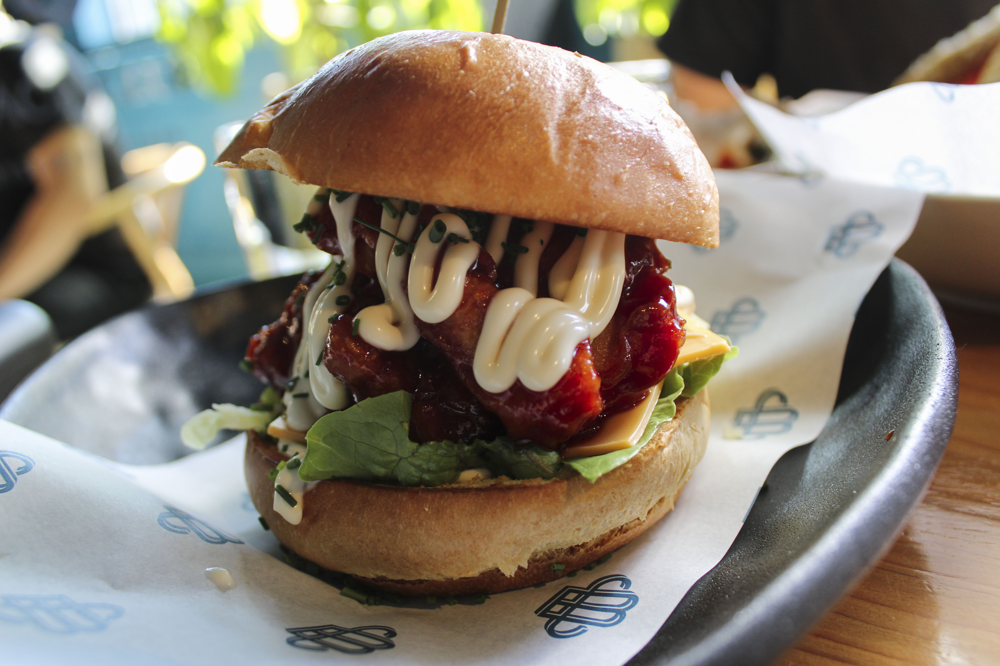

Beach Club Oyster & Kitchen

$$
KFC Burger
People who are in love with Korean cuisine and Western Cuisine, will absolutely love this. I have never
been a big fan of chicken burgers, but when I saw this on the menu, I just had to try it! It was the perfect
savoury dish to eat for an eventful afternoon.
beachclub.co.nz
236 Orakei Road, Remuera, Auckland 1050
022 136 3996